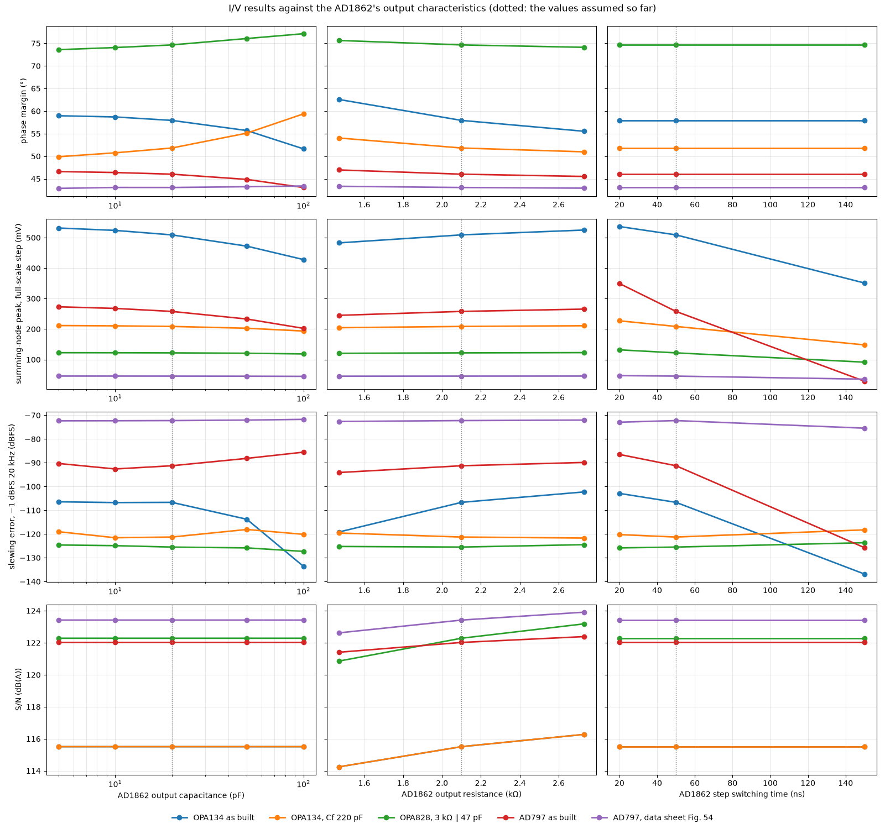
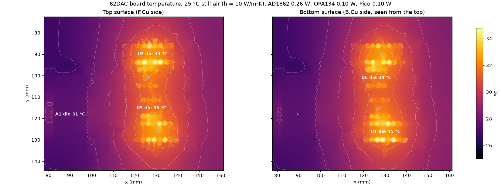
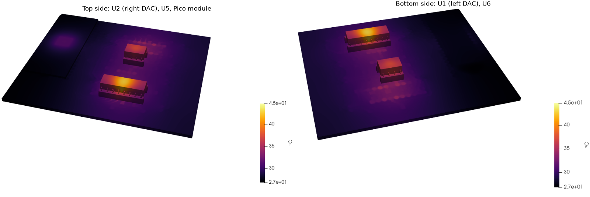
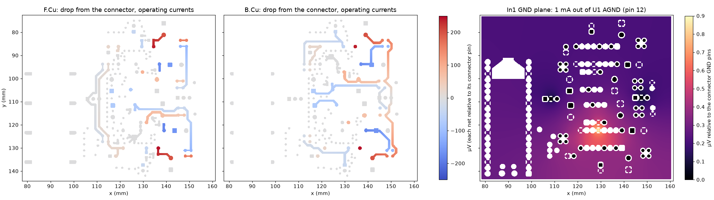
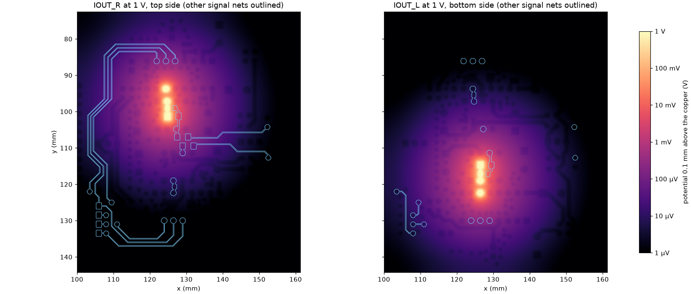

62DAC Signal Integrity Study
What on this board limits two AD1862s, and what to change to get their full 20-bit performance. Every number here comes from free tools run on the actual KiCad layout.
Where the board stands
The layout is fundamentally sound: two solid ground planes, short summing nodes, decoupling within 2–3 mm of every AD1862 supply pin. The real limits are the Pico's sample clock, how the shared clock and latch lines are routed and driven, and the speed and noise of the I/V op-amp.
spurs −75 to −80 dBFS (10–20 kHz tone)
exact clock: none
CLK at U1: 13.9 ps/mV
point-to-point: 0.35 ps/mV
with 220 pF: −103 to −125 dBFS
OPA828: −139 to −142 dBFS
swap LE and D_R in the bus: ~5× less
OPA828, 3 kΩ: 122.2 dB(A)
AD1862: ~120 dB
with 10 µF X7R added: ~0.02 Ω
LT3045 0.33 µV · LM317 + CADJ 53 µV
LM317 alone 509 µV
left − right: 0.33 °C
worst ringback 2.24 V > VIH 2.0 V
1/200–1/90 of an LSB·sample
LE and data edges: ≤ 0.6 fC
(1 LSB at the output ≈ 2.7 µV)
shared dual: −86 to −101 dB
LM317 without CADJ: 0.9 Ω peak at 3.5 kHz
other channel → summing node ≤ 0.11 fF (−154 dB at 20 kHz)
Changes, ranked by benefit for effort
Firmware changes cost nothing and address the largest effect, so they come first. Each item says where the evidence comes from: simulated on this layout, diyAudio (post numbers in the forum's AD1862 thread, no. 354078), or datasheet.
- Run the PIO from an exact multiple of the sample rate
Set clk_sys to 110.25 MHz for 44.1/88.2/176.4 kHz (PLL: REFDIV 2, FBDIV 147, post-dividers 4 and 2; VCO 882 MHz), or to 129.6 MHz for 48/96/192 kHz (VCO 1296 MHz, ÷5÷2). Write the PIO program so every sample takes exactly 2500 (or 2700) system clocks with an integer divider. Both clocks are within the RP2040's 133 MHz rating, and only firmware changes.
With the SDK's 125 MHz and a fractional divider, LE edges wander by 4–7 ns in a fixed pattern, giving spurs of −75 to −80 dBFS on a 10–20 kHz tone. With the exact clock that error is zero; what remains is the PLL's random jitter, which the datasheet does not specify. Changing sample-rate family means re-locking the system PLL; USB runs from its own PLL and is unaffected. The DAC then sets the rate, so USB audio must run in asynchronous mode with a feedback endpoint.
simulated (timing model) · RP2040 datasheet §2.18, §3.5.5
- Change C31 and C36 from 47 pF to 220 pF C0G, or use a faster op-amp
With the OPA134, every full-scale NOS step pushes the summing node about half a volt off 0 V and the op-amp slews. Both the generic model and TI's own OPA134 model agree that 220 pF removes it. It slows each step to about 9 V/µs, under the OPA134's 20 V/µs, and moves the I/V corner from 2.4 MHz to 520 kHz, still far above audio. An OPA828 needs no change.
simulated (ngspice I/V model + TI PSpice models)
- Stop the clock before LE falls, and keep the bus static in silence
Shift the 20-bit word right-justified, stop CLK, hold DATA, then drop LE 3–4 bit periods later. During silence, hold CLK, LE and DATA static. The PIO program can do this at no cost.
The simulated 25–73 mV of CLK→LE crosstalk then never coincides with the LE edge, so the T-split's threshold shelf has no noise to turn into sample-time jitter. Builders on the thread measured a sample-rate residual of about 1 µA equivalent that disappears when the clocks stop.
simulated · diyAudio #3957, #4277, #6513, #6533–6534
- Keep the RP2040 pads at slow slew and 4 mA drive (the defaults)
A 3 ns edge cuts the T-split's jitter sensitivity at U1 from 13.9 to 1.15 ps/mV on CLK and from 3.8 to 1.1 ps/mV on LE. It also reduces CLK→LE crosstalk from about 72 to 28 mV. Do not enable fast slew on these four pins.
simulated (ngspice + openEMS)
- Give each DAC its own LE pin, and ideally its own CLK pin
Route two Pico GPIOs instead of one, each through its own series resistor near the Pico. About 27 Ω suits 4 mA drive on these 67 Ω traces. PIO side-set toggles both pins on the same cycle, so the DACs stay in step. Both DACs then see a clean single ramp at 0.35 ps/mV, and the 405 MHz tree resonance disappears.
To keep a single pin, use a balanced T instead: lengthen the U1 branch to match U2 (about 65 mm each) and replace the 33 Ω with 0 Ω. The Pico's own ~40 Ω output then roughly matches the two branches in parallel, and both DACs see a clean edge. A daisy chain with an end termination is worse than today at the default drive.
simulated (ngspice) · 2 resistors and 2 short traces, or a meander
- Swap LE and D_R in the bus, so a data line sits between CLK and LE
CLK and LE now run side by side at 0.7–1.2 mm pitch for about 60 mm. With D_R between them their pitch doubles, and a coupled-line model checked against the full-board run puts CLK→LE crosstalk about 5× lower. A grounded guard trace with vias does slightly better (about 7×). If the clock is stopped, D_R is static while LE falls, so its own pickup does not matter.
simulated (2D field solver + ngspice) · no new parts
- For the last 4 dB of noise: OPA828 with the AD1862's internal 3 kΩ feedback resistor
Connect AD1862 pin 10 (RF, unconnected now) to the op-amp output and remove R8 and R9. The OPA828 reaches 122 dB(A) this way, against 116 dB(A) for the OPA134 with 1.4 kΩ, and the output becomes 2.1 Vrms. It comes only in SOIC or VSSOP, so it needs an adapter in the DIP socket. Alternatives: the ADA4625-1 (also SOIC), which ADI's model shows as good as the OPA828; OPA1611 with 150 pF for the lowest noise; or OPA627 with 82 pF to fit the socket. Keep one single op-amp per channel and keep 47 pF unless the part slews.
simulated (ngspice and LTspice; manufacturers' models for nine parts)
- Re-time LE at the DACs from a low-jitter audio oscillator
Feed a 45.1584 or 49.152 MHz audio oscillator (or half that) into GPIO20 (GPIN0, up to 50 MHz) and pace the PIO from it: either run clk_sys from it, or have the PIO wait on its edges. Put a dual D flip-flop (74LVC74 class) beside the DACs, clocked by the same oscillator, so each LE edge comes from the oscillator rather than from the Pico's PLL and output pins.
Each half of the flip-flop drives one DAC over a short trace, which also removes the T-split. Assuming about 2 ps of oscillator jitter, the sample-time error stays below −135 dBFS even for a full-scale 20 kHz tone.
simulated (timing model) · RP2040 datasheet §2.15 · diyAudio #870, #944, #1787
- Add 10 µF X7R next to each 100 nF on ±VL and ±VS
This flattens the 0.2–0.5 Ω region and removes the 4.5 MHz anti-resonance; impedance from 200 kHz to 5 MHz drops to about 20 mΩ. It leaves a mild 0.3 Ω bump near 100 kHz, still well above the audio band.
simulated (ngspice PDN model)
- Spend the effort on the regulators, not on more board capacitance
Below 20 kHz the rail impedance is set by the regulator and its wiring, not by the board. ADI's LTspice models put 0.33 µV of noise on the AD1862's +VS pin with an LT3045 and 0.36 µV on −VS with an LT3094. An LM317-type regulator gives 53 µV with 10 µF on its ADJ pin and 509 µV without. The AD1862 publishes no supply rejection, so only the quiet rails are safe without knowing it; they are also what builders used for their best results. If you use LM317/LM337, always fit the ADJ capacitor. Keep ferrite beads off the analog rails.
simulated (LTspice regulator models) · diyAudio #893, #2819, #11631
- Put a GND via within 0.5 mm of each signal via
The six vias on CLK, D_L and D_R currently have their nearest ground via 1.6–2.6 mm away. The return current visibly spreads at those layer changes.
simulated (return-current map)
- Use C0G for the feedback caps, and skip the 1–2 nF summing-node cap
C31, C36, C50 and C51 should be C0G. The 2.2 nF cap from the summing node to ground suggested in the diyAudio thread (from the AD797 data sheet's AD1862 circuit) cuts the OPA134's phase margin to 12° with 47 pF of feedback. Even with a matching 220 pF it is worse than 220 pF alone. That matches the thread's reports of op-amps misbehaving at 2000 pF.
simulated (ngspice I/V model) · diyAudio #2716, #4955, #4960, #10842
- Give the DACs air, and trim only when warm
The AD1862 dies settle 19 °C above the surrounding air in the open and 26 °C in a closed case; more than half of it is inside the socket and package. Vent the case, keep the transformer and regulators out of the air around the DACs, and do any MSB trim after the board has warmed up. A stock DIP socket costs a few degrees; soldering the DACs saves them, but loses the easy swap.
simulated (Elmer heat model) · datasheet operating range
- Leave the MSB trim unpopulated, and protect the supply order
Trim only with an FFT at −60 dBFS; a mis-set trimmer adds 20–30 dB of odd harmonics. Because each rail has a removable jumper, add a Schottky so −VL can never go more negative than −VS.
diyAudio #4770–4772, #10842 · datasheet abs. max.
How the board was simulated
The copper geometry comes straight from 62DAC.kicad_pcb through KiCad's own polygon engine: every track, pad, via barrel and filled zone, per layer. The stackup is JLC04161H-7628: 0.21 mm prepreg (εr 4.4) between each outer layer and its ground plane, and a 1.065 mm core.
- Full-wave: openEMS 0.37 FDTD, built from source and run on the M1 GPU through Metal. The model covers the digital bus, both AD1862 sockets and both I/V stages: a 43 × 65 mm crop, 11.2 million cells. All 31 capacitors in that area are series R‑C elements. The driven line has a 73 Ω source (33 Ω series resistor + ~40 Ω RP2040 pad); quiet lines have 73 Ω at the Pico end; each DAC input is 5 pF; each I/V summing node is 50 Ω.
- Circuit: ngspice transmission-line models of the CLK and LE trees for sweeps; a PDN model with the measured cap-to-pin distances.
- Sample clock: a timing model of the RP2040 PIO divider (datasheet §3.5.5) and PLL limits (§2.18), with the NOS output spectrum for each clocking scheme.
- I/V stage and op-amps: ngspice models of the AD1862 + op-amp I/V stage (stability, noise, slewing on NOS steps) for eight op-amps, cross-checked with TI's own PSpice models for six of them.
- FEM: Elmer 26.2 (heat, DC conduction, electrostatics) on voxel meshes written straight from the KiCad copper, 0.1–0.25 mm; results read and rendered with ParaView 6.2.
- LTspice: LTspice 17 in batch mode, for manufacturers' models that ngspice cannot use: TI's OPA1656, ADI's AD797, ADA4898 and ADA4625-1, op-amp noise taken from the models themselves, and ADI's regulator models (LT3045, LT3094, LT1963A, LT1964, LT3015, LT317A). On the same circuits it reproduces the ngspice phase margin, step and slewing results to within 0.6 dB.
- Bus routing: a 2D field solver for coupled traces (single trace: 67.9 Ω, εeff 3.13) feeding ngspice coupled-line and topology models, checked against the full-board run.
- Ground drop: a resistive solver on the rasterised In1 + In2 fill, tied by every GND via and pin barrel.
Validation
| 0.2 mm trace on F.Cu over In1 | Z0 | εeff | Note |
|---|---|---|---|
| Closed form, zero-thickness strip (Hammerstad–Jensen) | 72.8 Ω | 3.16 | reference for the FDTD sheet model |
| Closed form, 35 µm copper | 67.0 Ω | 3.19 | what the real board has |
| openEMS, 0.2 mm cells, lines on the edges | 42.5 Ω | 3.52 | too coarse |
| openEMS, 0.1 mm cells | 62.0 Ω | 3.26 | converging |
| openEMS, 0.15 mm with the ⅓–⅔ edge rule (used for the board) | 73.8 Ω | 3.19 | within 1.4 % of the sheet reference |
The ngspice and openEMS CLK waveforms agree on the shape: overshoot 0.12–0.18 V at a 1 ns edge, the same threshold shelf at U1, and the same ~405–430 MHz ringing. The tree rings for about 20 ns, longer than is practical to simulate, so each probe's tail after the pulse was extended with the board's own natural modes, fitted jointly across all probes. Tail-fit error is 2–11 % on most probes and 23 % on IOUT_L. Treat the coupling figures below as ±25 %.

The Pico's clock sets the sample instants
In a non-oversampling DAC each sample reaches the output the moment LE falls, so any error in when LE falls becomes an amplitude error. The PIO program generates LE, and the PIO runs from the system clock through a 16.8 fractional divider. The datasheet describes it as first-order delta-sigma: to reach a non-integer ratio it stretches some periods from n to n+1 system clocks. At the SDK's default 125 MHz, 44.1 kHz needs 2834.47 clocks per sample, so the LE edges land on a grid of 8 ns ticks in a repeating pattern.

The model moves each step of the NOS staircase by its LE error and computes the output spectrum for a −1 dBFS tone. The output is quantised to 20 bits, so the AD1862's own floor is visible for comparison.

| Clock scheme | LE error | 1 kHz tone | 10 kHz | 20 kHz | Rate error |
|---|---|---|---|---|---|
| 125 MHz, fractional divider, 64 cycles/sample | 4 ns p-p | out of band* | −80 dBFS | −76 dBFS | −12 ppm |
| 125 MHz, fractional divider, 96 cycles/sample | 7 ns p-p | −98 dBFS | −79 dBFS | −75 dBFS | −56 ppm |
| Exact 110.25 MHz, assumed 30 ps random | 30 ps rms | −136 dBFS | −117 dBFS | −113 dBFS | 0 |
| Audio oscillator + flip-flop, ~2 ps | 2 ps rms | −159 dBFS | −140 dBFS | −137 dBFS | 0 |
Values are the total jitter error from 20 Hz to 20 kHz relative to full scale, for a −1 dBFS tone at 44.1 kHz. * With 64 cycles the pattern alternates every sample, so a 1 kHz tone's error lands at 21.05 kHz, just above the audio band. Where the spurs fall depends on firmware details.
With an exact clock, the remaining random jitter comes from the PLL and the Pico's output pins. The datasheet gives no figure for it, so the chart below shows what any amount costs. Staying under the AD1862's ~−120 dB floor takes about 10 ps RMS for a full-scale 20 kHz tone, or about 160 ps at 1 kHz. A good audio oscillator re-timed by a flip-flop sits at a few picoseconds.

Clock and latch edges at the AD1862 pins
CLK and LE each leave one Pico pin, pass one 33 Ω resistor, then split. CLK runs 27.8 mm to U1 and 80.2 mm to U2; LE runs 31.9 mm and 65.3 mm. The near DAC therefore gets its edge in two steps: half the swing arrives at once, and the rest waits for the reflection from the far branch. With a fast edge, that step lands inside the 0.8–2.0 V input threshold band.

| Line · edge | Topology | Time in 1.2–1.8 V, U1 | Timing shift per mV of noise, U1 | U2 |
|---|---|---|---|---|
| CLK · 1 ns | shared, T-split (as built) | 1.14 ns | 13.9 ps/mV | 0.47 ps/mV |
| LE · 1 ns | shared, T-split (as built) | 0.74 ns | 3.84 ps/mV | 0.51 ps/mV |
| CLK or LE · 1 ns | own pin per DAC, 27 Ω | 0.20 ns | 0.35 ps/mV | 0.35 ps/mV |
| CLK · 3 ns | shared, T-split (as built) | 0.57 ns | 1.15 ps/mV | 1.17 ps/mV |
| LE · 3 ns | shared, T-split (as built) | 0.57 ns | 1.09 ps/mV | 1.19 ps/mV |
| CLK or LE · 3 ns | own pin per DAC, 27 Ω | 0.55 ns | 0.92 ps/mV | 0.92 ps/mV |
What this means in audio terms. Suppose 50 mV of data-correlated noise sits on LE while it falls at U1 with fast edges. That moves the sample instant by about 190 ps, which for a full-scale 20 kHz tone is an error near −96 dBFS, far above the AD1862's ~−120 dB floor. Point-to-point routing brings that to about −116 dBFS. A stopped clock removes the noise source itself.


Can different routing improve things?
On the analog side, no. The summing nodes are 3.4 mm long, both planes are solid, and digital coupling into the summing nodes is a small fraction of an LSB. The two levers are on the digital side: how one CLK or LE line is split to two DACs, and which lines run next to each other in the bus.
Splitting LE (and CLK) to two DACs

| Routing (timing shift per mV of noise) | 4 mA, 1 ns: U1 / U2 | 4 mA, 3 ns: U1 / U2 | 8 mA, 1 ns: U1 / U2 |
|---|---|---|---|
| As built: T near the Pico, 33 Ω | 4.0 / 0.52 ps/mV | 1.09 / 1.19 | 0.93 / 0.42 |
| Balanced T: equal 65 mm branches, 0 Ω | 0.38 / 0.38 | 0.97 / 0.97 | 0.32 / 0.32 |
| Daisy chain Pico → U1 → U2, 68 Ω + 220 pF at the end | 9.9 / 0.53 | 1.46 / 1.38 | 0.50 / 0.36 |
| One Pico pin per DAC, 27 Ω each | 0.35 / 0.35 | 0.92 / 0.92 | 0.31 / 0.32 |
A balanced T is as good as a second Pico pin. Both branches are the same length (about 65 mm, so the U1 branch gets a meander) and there is no series resistor, because the Pico's own ~40 Ω output roughly matches the two 68 Ω branches in parallel. A daisy chain with an RC end termination looks attractive, needing no extra pin and no DC current. But at the default 4 mA drive its first step stops around 2.2 V and the near DAC does worse than today. With slow 3 ns edges all four are within 1 ps/mV of each other.
Which lines run next to each other
CLK and LE run side by side at 0.71–1.24 mm pitch for 62 mm: 52 mm on the branches to U2 and 10.6 mm on the branches to U1. A 2D field solver gives the coupling per millimetre. Built into a coupled-line model of both trees, it reproduces the full-board run within 15 % at 1 ns edges (61–64 mV against 71–73 mV) and reads about 40 % low at 3 ns, so the table compares the options by ratio.
| Bus layout | LE noise at U1, 3 ns edges | 1 ns edges | vs as built |
|---|---|---|---|
| As built: CLK next to LE, ~0.9 mm pitch | 17 mV | 61 mV | 1× |
| CLK–LE pitch 2 mm | 3 mV | 11 mV | ÷5.5 |
| D_R between CLK and LE (swap LE and D_R) | 3 mV | 11 mV | ÷5.5 |
| Grounded guard trace between, with vias | 2 mV | 8 mV | ÷7.5 |
| LE on B.Cu (two planes between) | ≈ 0 | ≈ 0 | — |

Swapping LE and D_R is the cheapest change: the same copper, reordered. If the firmware stops the clock before LE falls, this crosstalk never reaches the sample instant anyway, so routing is the backup for firmware that keeps the clock running.
TDR and input impedance of the CLK tree
Looking in from the 33 Ω resistor, the driver sees 26–46 Ω for the first few centimetres: the two 67 Ω branches in parallel, pulled lower by the vias and DAC pins. The input impedance has sharp anti-resonances at 405 MHz and about 930 MHz. At those frequencies the source can't absorb energy, which is why the tree keeps ringing. Spatial resolution of this TDR is about 25 mm, set by the 1.4 GHz bandwidth of the run.

How much digital noise reaches the analog side
The I/V summing node (AD1862 pin 11 to OPA134 pin 2) is only 3.4 mm long on each channel, and it sits away from the bus. One CLK pulse pushes 0.10–0.32 µA peak into it. The net charge per edge is about 0.5 fC on the left channel and 0.2–0.3 fC on the right. One LSB held for one 44.1 kHz sample is 43 fC. Assume 32 clock edges per sample that all add up instead of cancelling in rising/falling pairs: that is about 0.7 nA of average current, roughly −123 dB below the ±1 mA full scale. In practice the pairs largely cancel.

With LE driven instead
LE's falling edge is the instant the AD1862 updates its output, so a second full-board run drove LE and kept CLK quiet. The LE edge injects about 0.5 fC into the left summing node and 0.1–0.2 fC into the right. It happens once per sample and is the same every sample, so it's independent of the data. As an average current it comes to about 20 pA, around −154 dB below full scale.
LE in turn puts 31 mV (3 ns edge) or 67 mV (1 ns edge) onto CLK at U1. That's far below the ~1.4 V switching point, so it cannot clock in a false bit. The 1 ns plot also shows the T-split shelf on LE's falling edge at U1, near 1.65 V. That's the edge that latches the DAC.


With a data line driven
Two more full-board runs drove D_L and D_R. Each data edge puts 0.59–0.61 fC (D_L) or 0.18–0.31 fC (D_R) into its own channel's summing node, 0.02 and 0.01 fC into the other, and at most 57 mV onto CLK or LE. Coupling into the summing node must vanish at DC, so over a whole sample the charge depends only on whether the line's level changed: at most one edge's worth, about 0.6 fC. That is under 27 pA of data-correlated current, roughly −150 dB below full scale.
The I/V op-amp on NOS steps
A NOS DAC hands the I/V stage a staircase. On a loud 20 kHz tone each step is almost a full-scale 2 mA jump, arriving in tens of nanoseconds. The op-amp cannot follow instantly, so for a moment the DAC current goes into the feedback and summing-node capacitors, and the summing node, normally a few microvolts, jumps. With the OPA134 and 47 pF it jumps about 0.6 V, beyond the input stage's linear range.

| I/V setup | Phase margin | Summing-node jump | Slewing error, 10 kHz | 20 kHz | S/N |
|---|---|---|---|---|---|
| OPA134 as built, 47 pF | 45° | 591 mV | −72 dBFS | −60 dBFS | 115.6 dB(A) |
| OPA134 + 2.2 nF summing-node cap | 12° | 193 mV | −92 | −81 | 115.6 |
| OPA134 + 2.2 nF + 220 pF feedback | 51° | 119 mV | −100 | −89 | 115.6 |
| OPA134, 220 pF feedback | 51° | 223 mV | −113 | −103 | 115.6 |
| OPA828 as built, 47 pF | 56° | 121 mV | −153 | −142 | 119.8 |
| OPA828, internal 3 kΩ ∥ 47 pF (2.1 Vrms) | 60° | 141 mV | −147 | −136 | 122.2 |
Slewing error is the in-band error caused by slewing alone, for a −1 dBFS NOS tone. At 1 kHz it stays below −130 dBFS in every case. The DAC's switching time (50 ns) and output capacitance (20 pF) are assumed; the end of this section shows how much they matter.

TI's own OPA134 model gives a milder number for the as-built stage, −107 dBFS at 20 kHz instead of −60, because it stays perfectly linear right up to a hard slew limit while a real JFET input bends gradually. Both models agree that the summing node jumps about half a volt (509 mV in TI's model) and that 220 pF removes the error (−125 dBFS with TI's model). The stage's own noise is 14.7 nV/√Hz at the output: the OPA134's 8 nV/√Hz times a noise gain of 1.67, plus the thermal noise of the 1.4 kΩ and the DAC's 2.1 kΩ output.
How much the AD1862's own output matters
The AD1862 data sheet gives the output resistance (2.1 kΩ ± 30%) and the settling time (350 ns), but not the output capacitance or how fast each code step switches. The PCM63, PCM1702 and AD1865 data sheets don't give a capacitance either. Everything above assumed 20 pF and 50 ns. LTspice swept each characteristic on its own, with the manufacturers' models, on the setups this study recommends or rejects.

| I/V setup | 20 kHz error, Cout 5–100 pF (dBFS) | 20 kHz error, step 20–150 ns | S/N, Rout ±30% (dB(A)) | Phase margin, all cases |
|---|---|---|---|---|
| OPA134 as built | −134 to −106 | −137 to −103 | 114.2 to 116.3 | 52 to 63° |
| OPA134, Cf 220 pF | −122 to −118 | −121 to −118 | 114.2 to 116.3 | 50 to 59° |
| OPA828, 3 kΩ ∥ 47 pF | −127 to −125 | −126 to −124 | 120.9 to 123.2 | 74 to 77° |
| AD797 as built | −93 to −86 | −126 to −86 | 121.4 to 122.4 | 43 to 47° |
| AD797, data sheet Fig. 54 | −72 | −75 to −72 | 122.6 to 123.9 | 43° |
- Capacitance and switching speed decide how badly a stage that slews distorts, not which stages are good. The OPA134 as built ranges from −102 to −137 dBFS depending on them: more capacitance and slower steps spread the edge out. The setups this study recommends, the OPA134 with 220 pF and the OPA828 with 3 kΩ, stay between −118 and −127 dBFS whatever the DAC does.
- The output resistance sets the noise gain (1 + Rf/Rout), so its ±30% tolerance moves S/N by about ±1 dB for every op-amp. For the OPA828 with 3 kΩ it is 120.9 to 123.2 dB(A). It shifts phase margin by a few degrees, never enough to change a ranking.
- The AD797 as built sits right at its slew limit, so the DAC's switching time decides whether it slews at all: −86 dBFS with 20 ns steps, −91 with 50 ns, −126 with 150 ns, where a full-scale step asks about 19 V/µs, just under its 20 V/µs. More output capacitance lowers its already small phase margin.
- None of this changes the recommendations. It only means the as-built OPA134 figure is a range rather than one number.
Measuring your own AD1862
With the op-amp pulled from its socket, the board powered and the clock stopped (so the DAC holds one code), the summing node is just the AD1862's output in parallel with C50/C51 and the socket:
- Capacitance and resistance: a NanoVNA (or any VNA or impedance analyser) between socket pin 2 and pin 3 (ground), 100 kHz–10 MHz, fitted as R ∥ C. R is the DAC's actual output resistance. Repeat with the AD1862 out of its socket; the difference in C is the AD1862's own output capacitance.
- Switching time and glitch: 50 Ω from socket pin 2 to ground turns the output into ±50 mV. Toggle the MSB (full-scale step) and watch it on a 100 MHz or faster scope with a short ground spring.
- Keep the test signal at the pin well under 100 mV: the data sheet gives no output compliance.
Which op-amp, and one package or two
Eight op-amps often used for AD1862 I/V, each tried as built, with the feedback cap sized to its slew rate (Cf ≥ 4 mA ÷ slew rate), and with the AD1862's internal 3 kΩ resistor. Gain-bandwidth, slew rate and noise are from the data sheets; phase margin and input capacitance are assumed (60°, 5 pF) where not published. TI's PSpice models cross-check six of them, and LTspice adds the OPA1656, the ADA4898 in place of the AD797, and the ADA4625-1 (below).

| Op-amp | Input | Cf | S/N, 1.4 kΩ / 3 kΩ | Slewing at 20 kHz, generic: as built → Cf sized | Maker's model: as built → Cf sized | DIP-8 single? |
|---|---|---|---|---|---|---|
| OPA134 (now) | JFET | 220 pF | 115.6 / 118.6 | −60 → −103 | −107 → −125 | yes |
| OPA828 | JFET | 47 pF | 119.8 / 122.2 | −142 → −142 | −139 | no (SOIC, VSSOP) |
| OPA627 | JFET | 82 pF | 118.4 / 121.1 | −113 → −120 | −148 → −132 | yes |
| OPA1641 | JFET | 220 pF | 118.5 / 121.2 | −84 → −102 | −101 → −124 | no |
| OPA1656 | CMOS | 180 pF | 119.4 / 122.0 | −106 → −120 | −97 → −117 (LTspice) | no |
| LM4562 | bipolar | 220 pF | 120.9 / 122.9 | −100 → −117 | no TI model | dual only |
| OPA1611 / OPA1612 | bipolar | 150 pF | 122.2 / 123.7 | −108 → −121 | −137 → −123 | no (SOIC) |
| AD797 | bipolar | 220 pF | 122.1 / 123.5 | −103 → −120 | −91 → −104 (LTspice) | yes |
S/N is A-weighted against full scale; the AD1862 itself is about 120 dB. Slewing figures are dBFS for a −1 dBFS tone. TI-model values below about −120 dBFS are at the method's floor and mean "no measurable slewing". Packages are from the vendors' listings; check stock before ordering.
Recommendation: the OPA828 with the internal 3 kΩ resistor. It is the only part that both models show clean with the existing 47 pF, it reaches 122 dB(A), and its JFET input has negligible bias current. The OPA1611 is about 1.5 dB quieter but needs 150 pF. The OPA627 fits the DIP socket directly at about 1.5 dB more noise. The OPA134 stays usable with 220 pF. The ADA4625-1 is an equal alternative to the OPA828 (see LTspice below). I would skip the OPA1641 (slews like the OPA134), the LM4562 (a dual), the OPA1656 (slews at 47 pF and distorts most even with 180 pF) and the AD797 (ADI's own model slews with 47 pF like the OPA134; with 220 pF its phase margin drops to 43° and the error stays near −100 dBFS; wired as its own data sheet shows, it reaches −72 dBFS in NOS).
Manufacturers' models in LTspice
LTspice runs four models ngspice could not: TI's OPA1656, which never converged there; ADI's own AD797 model, a 1992 macro model that LTspice does not ship (analog.com offers it behind a license page); ADI's ADA4898, a newer bipolar part of the same class (0.9 nV/√Hz, 65 MHz, unity-gain stable); and ADI's ADA4625-1, a low-noise JFET part. OPA134 and OPA828 repeat the ngspice runs as a check: phase margin, summing-node step and slewing agree to within 0.6 dB where the error is above −110 dBFS. LTspice also uses the models' own noise, which ngspice could not. It agrees with the datasheet-based figures above to within 1 dB.
| Op-amp | Model | Cf sized | S/N, 1.4 / 3 kΩ | Summing node (mV) | 20 kHz, 1.4 kΩ | 20 kHz, 3 kΩ | Phase margin |
|---|---|---|---|---|---|---|---|
| OPA134 | TI, JFET | 220 pF | 115.5 / 118.5 | 509 → 209 | −107 → −121 | −106 → −115 | 52–70° |
| OPA828 | TI, JFET | 47 pF | 119.8 / 122.3 | 104 | −136 | −125 | 72–75° |
| OPA1656 | TI, CMOS | 180 pF | 120.4 / 122.8 | 291 → 64 | −97 → −117 | −88 → −97 | 50–55° |
| AD797* | ADI 1992, bipolar | 220 pF | 122.0 / 123.4 | 258 → 20 | −91 → −104 | −79 → −99 | 43–49° |
| ADA4898 | ADI, bipolar | 82 pF | 120.8 / 122.0 | 69 → 48 | −119 → −108 | −106 → −103 | 60–63° |
| ADA4625‑1 | ADI, JFET | 100 pF | 120.7 / 123.0 | 260 → 159 | −136 → −126 | −126 → −121 | 58–66° |
Pairs read 47 pF → Cf sized. S/N in dB(A) against full scale, slewing error in dBFS for a −1 dBFS NOS tone (the scaled method). For scale, the AD1862's own THD+N at full scale is −94 to −98 dB. * The AD797 model dates from 1992: it reproduces slew rate, bandwidth, phase and noise, but its input and output stages are behavioural, so read its distortion figures as indicative.

- OPA1656: slews with 47 pF (summing node 291 mV, −97 dBFS at 20 kHz) and needs 180 pF. With 3 kΩ it stays near −97 dBFS even then, the worst of the five.
- AD797 (ADI's 1992 model): the quietest here, 122.0/123.4 dB(A): 1.3–2.2 dB ahead of the ADA4625-1 and OPA828 with 1.4 kΩ, but only 0.4–1.1 dB with 3 kΩ. At 20 V/µs it slews with 47 pF like the OPA134: summing node 258 mV, −91 dBFS at 20 kHz, −79 dBFS with 3 kΩ. 220 pF stops the slewing (summing node 20 mV), but pushes the stage toward unity noise gain, where the AD797 has only 43–44° of phase margin, and the error stays at −99 to −104 dBFS at both 10 and 20 kHz. That fits its reputation for being touchy in this circuit.
- ADA4898: the smallest summing-node swing (48–78 mV) and 120.8/122.0 dB(A), only about 1 dB better than the OPA828, because the 2.1 kΩ DAC resistance and Rf dominate the noise. As a stand-in for the AD797 it was too kind: at 55 V/µs it does not slew with 47 pF, where the AD797 does. Its distortion grows with Cf and with 3 kΩ, from −120 to −103 dBFS. That is still below the AD1862's own distortion, but well behind the JFET parts.
- ADA4625-1: 58–66° phase margin, 123.0 dB(A) with 3 kΩ, and −126 to −136 dBFS with the 47 pF already fitted. It matches the OPA828 and is also only in SOIC (or LFCSP).
- Only parts that slew need a bigger Cf. For the OPA828, ADA4898 and ADA4625-1, 47 pF measures better than the slew-sized value, probably because a larger Cf makes the output stage move more charge on every step.
The AD797 as its data sheet wires it
Many builders copied the AD1862 I/V circuit from the AD797 data sheet (Fig. 54): 3 kΩ, 2000 pF from the summing node to ground, and 82 pF in series with 100 Ω across the feedback resistor. Some add 47 pF from pin 8 to the output, or scale it to the board's 1.4 kΩ with 1 nF and 100 pF + 100 Ω. ADI's model, in NOS:
| AD797 circuit | Phase margin | Summing node (mV) | 10 kHz (dBFS) | 20 kHz (dBFS) | S/N (dB(A)) |
|---|---|---|---|---|---|
| Data sheet Fig. 54: 3 kΩ, 2000 pF to ground, 82 pF + 100 Ω | 43° | 46 | −85 | −72 | 123.4 |
| Fig. 54 + 47 pF from pin 8 to the output | 23° | 44 | −82 | −71 | 123.4 |
| Builders' version: 1.4 kΩ, 1 nF to ground, 100 pF + 100 Ω | 26° | 48 | −91 | −78 | 122.0 |
| Builders' version + 47 pF from pin 8 to the output | −24° | 98 | −21 | −16 | 122.0 |
| For comparison: as built, 1.4 kΩ ∥ 47 pF | 46° | 258 | −115 | −91 | 122.0 |
The data sheet circuit is the worst setup in this study at −72 dBFS, although its summing node barely moves (46 mV). The 2000 pF keeps the input quiet, but each full-scale step must still move the output about 6 V through 3 kΩ ∥ 82 pF, about 24 V/µs, more than the AD797's 20 V/µs. That circuit assumed an oversampling filter in front of the DAC, which keeps the steps small; in NOS they are full size. In the model, 47 pF from pin 8 to the output cuts the data sheet circuit's phase margin to 23°. The builders' 1 nF version has only 26°, and with the pin-8 capacitor added it oscillates (phase margin −24°; the "error" of −16 dBFS is the oscillation). The 1992 model treats pin 8 behaviourally, so take these as a reason to check a built board with a scope rather than as measurements.
Is there an AD797 wiring that works in NOS? A 220 pF feedback cap keeps a full-scale step under its slew rate, and 1–10 nF from the summing node to ground gives it the high-frequency noise gain it likes. Those combinations are stable (45–64° phase margin) and stop the slewing; the best, 3 kΩ ∥ 220 pF with 10 nF to ground, has 64° and 123.4 dB(A). But the error stays between −105 and −93 dBFS at both 10 and 20 kHz, 20–40 dB behind the OPA828. It is not output-stage distortion: as a plain gain-of-−10 amplifier the same model gives −148 dB THD at 20 kHz. Nor is it the summing-node spike, which these wirings hold to 13–22 mV. Putting 100 Ω in series with the 220 pF drops the phase margin to 15–19°. So the AD797 can be made stable and slew-free, and that is still below the AD1862's own −94 to −98 dB, but nothing in ADI's model shows it beating the OPA828 here.
One dual for both channels, or one single per channel
An earlier version of this design (the dev branch) used one LM4562 dual for both channels. The current board puts a single op-amp next to each DAC. The summing node is a virtual ground, so any stray capacitance C from the other channel's output becomes crosstalk of 2π·f·C·Rf. The ngspice two-channel model matches that formula to 0.1 dB.
| Layout | Stray C | L↔R at 1 kHz | at 20 kHz |
|---|---|---|---|
| Two singles ~40 mm apart (this board) | ~0.002 pF | −155 dB | −129 dB |
| One dual in SOIC, short traces | 0.05 pF | −127 dB | −101 dB |
| One dual, both summing-node traces converging | 0.15 pF | −118 dB | −92 dB |
| One dual in a DIP socket | 0.3 pF | −112 dB | −86 dB |
| Inside the LM4562 itself (data sheet) | — | −118 dB | −112 dB |

A shared dual also stretches at least one summing-node trace from 3.4 mm to 15–40 mm, because the DACs are about 40 mm apart, and it breaks the mirrored left/right layout. Keep one single per channel. A dual per channel only makes sense if its second half does a real job, such as a DC servo or a balanced output.
Where the CLK energy actually goes


Ground voltage drop from the DAC's own current
The R‑2R ladder returns signal-dependent current through AD1862 pins 9 and 12. Any plane voltage between those pins and the op-amp's ground reference adds directly to the output. With 1 mA flowing from each DAC's ground pins to the supply connector J1, the difference is 0.59 µV (left) and 0.60 µV (right). That's about 0.2 LSB per mA at the output, so the plane is not a limit.

Decoupling seen from each AD1862 supply pin
Every supply pin has a 100 nF within 2.0–2.6 mm and a 47–100 µF electrolytic within 4–7.5 mm. Above 10 MHz the curve is set by the DIP socket and lead inductance (about 4 nH), which no board change can remove. Between 100 kHz and 5 MHz the electrolytics' ESR dominates, with an anti-resonance against the 100 nF near 4.5 MHz. A 10 µF X7R beside each 100 nF fixes that band.

Which regulator for the ±12 V rails
The ±12VA rails feed both AD1862 ±VS pins and the I/V op-amps. They come from off the board, so the regulator is the builder's choice. LTspice has ADI's models for the usual candidates. Each one runs from 15 V into 25 mA, through 20 mΩ + 300 nH of wiring, to U1's decoupling and supply pin. For ripple, the 15 V input carries 100 mV p-p of 100 Hz sawtooth, as from a 2200 µF reservoir.
The AD1862 data sheet gives no supply rejection. The last column shows how much it would need for the rail to stay harmless: noise 10 dB under the DAC's own 120 dB S/N, and the 100 Hz ripple tone under −130 dBFS. The op-amp's side is known: the TI models give each op-amp's supply rejection inside the I/V stage, and the table carries the rail's noise through it to the output.

| Regulator | Rail | Noise at the pin, 20 Hz–20 kHz (µV) | Ripple rejection at 100 Hz (dB) | |Z| at 1 kHz (mΩ) | At the OPA134 output (dBFS, A) | AD1862 would need (dB): noise / ripple |
|---|---|---|---|---|---|---|
| LT317A | +12 V | 509* | 72 | 128 | −118 | 63 / 25 |
| LT317A + 10 µF on ADJ | +12 V | 53.3* | 90 | 28 | −138 | 43 / 8 |
| LT1963A | +12 V | 40.4 | 51 | 45 | −145 | 41 / 47 |
| LT3045 | +12 V | 0.33 | 141 | 23 | −183 | none / none |
| LT1964 | −12 V | 9.4 | 48 | 39 | −203 | 18 / 49 |
| LT3015 | −12 V | 26.9 | 60 | 49 | −182 | 38 / 37 |
| LT3094 | −12 V | 0.36 | 120 | 24 | −217 | none / none |
* The LT317A model has almost no noise. These rows use the data sheet's 0.003 % of Vout instead. With 10 µF on ADJ, the reference noise reaches the output at unity gain rather than ×9.6. The OPA134 stage's own noise is −115.5 dBFS(A).

- LT3045 + LT3094: 0.33 and 0.36 µV at the pin. Nothing to reject: the rails sit below the AD1862's own noise even if the DAC passes them straight through. The models show 120–145 dB of ripple rejection at 100 Hz; on a real board, layout and ground returns will limit that long before it matters.
- LM317 type without the ADJ capacitor: the only case that shows up at the I/V output. With the OPA134 it costs about 2 dB of S/N, and the rail impedance peaks at 0.9 Ω near 3.5 kHz. With 10 µF on ADJ the noise falls ten times and the peak disappears.
- LT1963A, LT1964, LT3015: 9–40 µV of noise and 48–60 dB of ripple rejection. The op-amps cope easily, but the AD1862 would need 18–41 dB of rejection for the noise and 37–49 dB for the ripple, and nobody knows whether it has that.
- The same reasoning applies to the ±5 V VL rails, whose rejection is not published either.
Heat, DC current and 3D capacitance in Elmer
Three finite-element models in Elmer, the open-source FEM package, built straight from the KiCad copper like the openEMS model: all four copper layers and every via and plated hole, rasterised onto a voxel grid and written as an Elmer mesh. ParaView shows the 3D results. They answer what the circuit models cannot: how hot the DACs run, how much the supply and ground copper drops, and the real stray capacitance into each summing node.
How hot the DACs run
Assumed dissipation: 0.26 W per AD1862 (its data sheet gives 11 and 13 mA total at ±12 V; here the logic rails are ±5 V), 0.10 W per OPA134 and 0.10 W for the Pico. Each DIP sits 3 mm up in its socket; the die, its paddle, the leadframe, the epoxy body and the leads are modelled. Every exposed surface loses heat by natural convection, h = 10 W/m²K in open air and 5 W/m²K in a closed case, with the room at 25 °C. Mesh: 0.25 mm voxels, 1.2 million elements.


| Ref | Part | Side | Power (W) | Die, open air (°C) | Die, closed case (°C) | Board under it (°C) | θJA (°C/W) |
|---|---|---|---|---|---|---|---|
| U1 | AD1862, left | bottom | 0.26 | 45 | 51 | 33 | 75 |
| U2 | AD1862, right | top | 0.26 | 44 | 50 | 32 | 74 |
| U5 | OPA134, left | top | 0.10 | 39 | 45 | 32 | 144 |
| U6 | OPA134, right | bottom | 0.10 | 39 | 45 | 32 | 144 |
| A1 | Pico module | top | 0.10 | 31 | 35 | 28 | 59 |
- The DAC dies run 19 °C above the air in the open and 26 °C in a closed case. The AD1862 is rated for −25 to +70 °C ambient, so it is safe, but its data sheet specifies performance at 25 °C and its THD+N changes with temperature (Fig. 5). Keep the case vented and the transformer and regulators away from the DACs. If you trim the MSB, trim after the board has warmed up.
- About 12 of those 19 °C are inside the socket and package. More copper on the board would barely help. A cooler room or a vented case helps directly; soldering the DAC without a socket would also help a little.
- Left and right DAC dies differ by 0.33 °C. The mirrored placement keeps the channels thermally matched, so their gains and linearity drift together.
- The op-amp dies reach 39 °C, partly because the board under them is already 32 °C from the DACs. That is far inside the OPA134's 125 °C rating.
- The electrolytics stay at 30–31 °C (34–36 °C closed). Life halves for every 10 °C, so a few degrees above room air cost almost nothing. The warmest capacitors are the 47 µF NR1 caps under the DACs (C16, C26) at 33 °C (38 °C closed). They are fine, but they are the first to check if the case runs hot.
DC current and voltage drop in the supply and ground copper
The five nets that carry supply current (±12 V analog, ±5 V logic and GND) on all four layers, with every via, plated hole and wire jumper, on 0.1 mm voxels (1.1 million elements). Assumed currents per AD1862: 9 mA into +VS, 11 mA out of −VS, 2 mA on each VL pin and 1 mA from each GND pin; 4 mA per op-amp rail. Each net is measured from its connector pin on J1 or J2.

| Pin | Left DAC / op-amp (µV) | Right (µV) |
|---|---|---|
| +VS (16), +12 V | −179 | −171 |
| −VS (2), −12 V | 243 | 237 |
| +VL (4), +5 V | −39 | −43 |
| −VL (8), −5 V | 26 | 23 |
| AGND (12) | −2 | −2 |
| OPA134 V+ (7) | −72 | −70 |
| OPA134 V− (4) | 83 | 88 |
- The largest drop is 0.24 mV (U1 −VS, pin 2). Regulator tolerances are tens of millivolts, and a DC offset on a rail is not heard. Wider supply traces would change nothing.
- Current density peaks at 0.65 A/mm², against about 30 A/mm² for 10 °C of self-heating in outer-layer copper. There are no hot spots in the copper.
- 1 mA leaving a DAC's AGND pin moves its op-amp's ground reference (+IN) by 0.28 µV (left) and 0.26 µV (right), the same order as the 2D plane solver's 0.6 µV/mA, which put the current into both ground pins and ignored the vias. At the I/V output that becomes 0.44–0.46 µV per mA of ground current, 0.17 of an LSB (2.7 µV). The ground planes do their job; leave them as they are.
Stray capacitance into the summing nodes
Each I/V summing node is a virtual ground: a net coupled to it through a capacitance C pushes a current C·dV/dt into it, and the op-amp turns that into output voltage. The inner ground planes screen the two outer layers from each other, so Elmer solves each side on its own: the copper of every net, the via and pin barrels, the 0.21 mm prepreg over the plane, and air up to a grounded lid 13 mm away (0.125 mm voxels, 3.9 million elements per side). Each summing node in turn is held at 1 V with everything else at 0 V; the charge induced on each net is its mutual capacitance. Totals are the sum of both sides.

| Net | to IOUT_L (fF) | to IOUT_R (fF) | Charge per 3.3 V edge (fC) | Share of 1 LSB held for one sample (43 fC) |
|---|---|---|---|---|
| CLK | 0.116 | 0.124 | 0.41 | 1/106 |
| LE | 0.131 | 0.137 | 0.45 | 1/96 |
| D_L | 0.110 | 0.000 | 0.36 | 1/119 |
| D_R | 0.018 | 0.122 | 0.40 | 1/107 |
| other channel's output | 0.071 | 0.109 | — | — |
- The other channel's output couples 0.07 fF into the left summing node and 0.11 fF into the right. That is about 18× less than the 0.002 pF assumed for channel separation above, which put it at −129 dB. At 20 kHz it means −154 dB with 1.4 kΩ (−148 dB with 3 kΩ). The board copper does not limit separation. What remains is above the board: socket pins, leads and the output wiring, so run the output cables away from the other channel's I/V stage.
- CLK couples up to 0.124 fF, or 0.41 fC per 3.3 V edge. That falls inside the 0.2–0.6 fC per edge openEMS found by a completely different method, so the two models agree. One edge carries 1/106 of an LSB held for one sample, and rising and falling edges cancel. LE and the data lines are similar (0.36–0.45 fC). Nothing to change.
- Each node's own output adds 6.2 fF (left) and 6.0 fF (right) across the 47 pF feedback capacitor, about 0.01 %. Irrelevant.
- The total stray on each summing node is 3.6 pF (left) and 3.5 pF (right), mostly pads and traces over the plane. It sits beside 47 pF (C50/C51) and about 20 pF inside the DAC, so it moves the I/V loop by a few percent of the shunt capacitance: no visible change to stability.
Assumptions to keep in mind
- RP2040 pad resistance (40 Ω at 4 mA) and AD1862 input capacitance (5 pF including socket) are typical values, not measured. The conclusions hold across the 2–12 mA sweep.
- The summing node is modelled as 50 Ω at high frequency. The real node is the OPA134 input in parallel with 47 pF to ground and 47 pF to the output, so the true injected current could be a little higher or lower.
- Copper is a zero-thickness sheet with no solder mask. Real 35 µm copper with mask brings Z0 from 73.8 Ω to about 65 Ω, which shortens the shelf only slightly.
- The clock model reproduces the divider's pattern exactly. Raspberry Pi does not specify random jitter from the RP2040's PLL and output pins; the 30 ps and 2 ps cases are assumptions, and the chart shows the cost of any value.
- Correction, 30 Oct 2026: an earlier version of this page gave CLK→LE crosstalk as 51–88 mV and summing-node charge as 0.5–0.8 fC. Those figures included a spurious low-frequency term left over from extending the simulated waveforms. With it removed (coupling into a quiet line must vanish at DC) they are 25–73 mV and 0.2–0.6 fC.
- The I/V results use datasheet-based op-amp models plus TI's own PSpice models for six parts. The two disagree on how much slewing distorts: TI's models stay linear up to a hard slew limit, the generic model compresses gradually. So the I/V distortion figures are a range. Both agree on which parts slew and that 220 pF fixes it. The AD1862's output capacitance (20 pF) and switching time (50 ns) are assumed; section 7 sweeps them (5–100 pF, 20–150 ns) together with the ±30% output resistance, and shows how to measure them. The OPA1656 model would not run in ngspice, and TI's noise models don't work there, so noise uses datasheet figures.
- The AD797 result uses ADI's 1992 macro model (license accepted on analog.com; the file is not redistributed). Its NOS waveform starts from 0 A, because the model finds no operating point at some input currents.
- LTspice runs both the OPA1656 model and the TI noise models; its model-based noise agrees with the datasheet figures to within 1 dB.
- Regulator results use ADI's LTspice models with assumed wiring (20 mΩ + 300 nH), 25 mA load and 15 V input with 100 mV p-p ripple. The LT317A model has almost no noise, so its data-sheet figure is used. Ripple rejection beyond about 100 dB is the models' figure; real layouts lose it to ground returns. The AD1862's supply rejection is unknown, hence the "would need" column.
- The Elmer heat model approximates each package and socket from typical dimensions (die, paddle, fanned leadframe, epoxy, leads). As a check, an OPA134 soldered without a socket comes out at 86 °C/W junction to ambient against the data sheet's 73 °C/W on a 4-layer test board, so the temperature rises here lean about 18 % high (the test board is larger, with heavier inner copper). Dissipation and the convection coefficient (10 W/m²K open, 5 closed) are assumptions; temperature rise scales with both.
- The DC model uses assumed supply currents per pin; drops scale with them. The capacitance model covers the copper and barrels in the board but not socket pins, component leads or anything above the board, which add their own coupling; the lid 13 mm above each side stands in for an enclosure.
- The full-wave model is a 43 × 65 mm crop. The Pico module and the far right of the board are outside it.
- Field maps are relative (per volt of source). They show where energy concentrates, not compliance margins.
- Items marked diyAudio are builders' reports, cited by post number; weigh them as such.